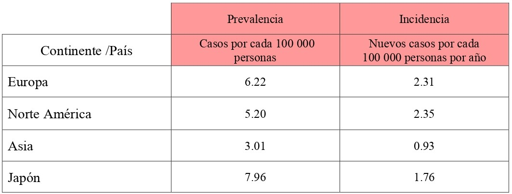

Camera
Camera
1. Contexto Social
A nivel mundial
Los estudios de la epidemiología de la ELA son numerosos y las tasas de incidencia y prevalencia varían ampliamente [ 1 ] . Según un estudio realizado en el 2020 por Brown, a nivel mundial, las tasas de prevalencia e incidencia se resumen de la siguiente forma de acuerdo a cada región: [ 2 ]
De acuerdo a lo obtenido, las tasas de prevalencia e incidencia generalmente son más altas en Europa y América del Norte que en Asia y América Latina [ 3 ] . Asimismo, los estudios incluidos informaron que la tasa de incidencia de la ELA alcanzó su punto máximo entre las edades de 60 y 75 años. [ 1 ]
Perú
En América Latina, los estudios son escasos y desactualizados. Específicamente en el Perú, no existe un registro exacto de los pacientes con ELA; no obstante, la Asociación ELA PERÚ reúne y registra, sin fines de lucro, a cierto número de pacientes con esta patología.
Según la asociación ELA Perú, actualmente existen 160 pacientes padecientes de ELA que se encuentran registrados en su base de datos. Sin embargo, un considerable número de pacientes o familiares que llegan a contactarse con ellos suelen desertar, por lo que no se encuentran en el registro a la fecha. Esto complica el tener un registro exacto de pacientes con ELA en el país. Además, debido a que la esperanza de vida de los pacientes es de 2-4 años desde el inicio de la enfermedad y que sólo el 5-10% de los pacientes sobreviven más de 10 años [ 4 ] , muchos pacientes registrados tienden también a fallecer, por lo que las cifras son variables cada año.
En el 2015, el MINSA, en colaboración con la sociedad civil, elaboró el Reglamento de la Ley Nº 29698 y el "Plan Nacional de las Enfermedades Raras o Huérfanas 2016-2021" el cual permitirá garantizar el derecho de acceso a los servicios de salud; así como la gestión de promoción, prevención, diagnóstico, tratamiento integral y rehabilitación para pacientes que padecen de enfermedades raras o huérfanas. [ 5 ]
2. Contexto Económico
A nivel internacional
En Alemania, tras una revisión sistemática de 20 estudios internacionales, se concluyó que los costes nacionales de la esclerosis lateral amiotrófica variaron entre 149 millones de euros y 1329 millones de euros. [ 6 ]
En España, el coste total por paciente destinado únicamente a la esclerosis Lateral amiotrófica es de 44,483 € y el coste total que invierte España, aunque existen pocos estudios que midan el impacto económico de la ELA, se ha calculado que el coste por paciente se acerca igualmente a los 50.000 € anuales. [ 7 ]
Una revisión internacional, en el año 2016, muestra evidencia el elevado coste total anual que supone cada paciente con ELA a nivel internacional, el cual alcanza los 69.475 $ en los Estados Unidos, 59.018 $ en España, 47.092 $ en Alemania, 21,732 $ en los Países Bajos y 11,251 $ en Grecia. [ 7 ]
Perú
En el 2018, se realizó un estudio en base a las ERH, enfermedades que provocan un grado severo de discapacidad crónica o muerte, de las cuales no hay muchos datos clínicos por su prevalencia definida como menor a 5 en 10 000 habitantes. Sin embargo, el porcentaje de personas con enfermedades huérfanas hacen entre 5 a 7 % de la población mundial que, trasladado al Perú, serían entre 1.5 a 2 millones de pacientes afectados. Cabe mencionar que, la palabra "huérfana" se menciona porque no se ha obtenido la suficiente información médica ya que no se tiene un tratamiento absoluto o cura. [ 8 ]
Cabe resaltar que, la ELA, al ser una enfermedad huérfana que afecta aproximadamente al 7% de la población mundial, implica que el acceso tanto a medicina como a terapias para el tratamiento son altamente costosas, con un costo total de 15 mil soles a 18 mil soles desde el momento de ser diagnosticados, ya que el precio por una resonancia nuclear magnética es de 400 soles aproximadamente. [ 9 ]
Este año ,las medidas para mejorar el sistema de salud y atender la Emergencia Sanitaria mantienen a la salud como prioridad, con S/ 20,991 millones, lo cual representa un crecimiento de 13.5% respecto a 2020; S/ 2,213 millones serán destinados al Seguro Integral de salud [ 10 ] . Además, en 2019 el Minsa financió a más de 42 mil personas con enfermedades raras, huérfanas y de alto costo mediante FISSAL que es una unidad ejecutora del Seguro Integral de Salud que cubre enfermedades raras o huérfanas (ERH). [ 11 ]
Problema
Definición de la problemática
In recent years people have realized the importance of proper diet and exercise, and recent surveys show that over the last 20 years people are eating better and working out more often, resulting in people living longer, but people are still lacking in their understanding that their mental well being is just as important as their physical health.
Today most people get on average 4 to 6 hours of exercise every day, and make sure that everything they put in their mouths is not filled with sugars or preservatives, but they pay no attention to their mental health, no vacations, not even the occasional long weekend, 60 hour weeks, taking work home with them and even working weekends. All of this for hopes of one day getting that big promotion. What good will it do you when your brain overloads and you have a breakdown in the office.


Thank you for shooting Jared's Bar Mitzvah. Our experience working with you was fantastic and the pictures you captured are outstanding and really captured the magic of the day.
- Ron & Nina B
I also enjoy watching an hour or 2 of television every night, some light sitcoms are a great way to lighten your minds load, and laughing out loud for 30 seconds every day is a great way to release stress.
Video games are also great for stress release, if you are mad at your boss what better way to get it out of you then boxing, just imagine you are pounding on your boss and hope you don’t lose. I hope you try some of these methods or think of some of your own to help keep the stress down in your life and keep your mental health in as good of condition as the rest of you.